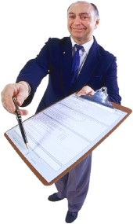

Car Dealership Dictionary of Automobile Dealer Terminology

You need to know all of the automobile dealer terminology and automobile dealer
slang before stepping foot into a showroom. An informed buyer is often a car dealer's worst nightmare. That's because
automobile dealer slang is the way car dealers speak to one another in a shorthand sort of fashion, but they speak
directly to you very differently. What they are saying behind your back can be a real eye opener. Here are some of
the terms from an actual car dealer slang dictionary.But if you have a lemon and want to get started right now on the process of getting rid of it, then call our Toll
Free UsedCar Lemon Law Hotline right now, 1.888.331.6422. Or Click Here for free Lemon Law help
Okay, here's the dictionary we actually got from a car dealer. Read it and you will know what they really mean by
their buzz words and slang.
BABYSITTER: Slang term used for a co-signer or co-buyer on an automobile contract; often used where the primary buyer needs help to make a decision or make the buy.
BACK END: Back end is the contract which is being sent to the bank for financing, where extra "hidden" profit is made by the dealer; the back end profit occurs because the dealer gets a kickback from the bank just for setting up the loan there instead of somewhere else.
BACK OUT THE DEAL: See meaning of Unwind.
BEATER: See SLED.
BE BACK: Prospective buyer who has been in the dealership once or several times. Did not buy at that time and has returned for additional information or whatever.
BIRD DOG: One who refers prospective customers to a particular dealership or salesman for a given fee or compensation.
BOUNCE: To bounce someone means to increase the sales price of the car, interest rate, monthly payments, etc.
BRICKS: This term is used to refer to one's house as security in taking out a second trust deed loan.
BROWNIE: To sell a car to a customer as a result of going around and putting a piece of paper with a message like "call me regarding your car" on car windows on the street.
BUMP: See BOUNCE.
BUREAU: A credit report on a customer.
BUY RATE: This is the interest rate that banks or financing institutions will charge on all contracts being financed. It is a "secret" number between the lender and the dealer which is the real amount of the interest rate that the loan starts out at before the dealer increases it for its own extra profit.
A BUYBACK: a vehicle that the manufacturer bought back, usually because it was a lemon, and then was resold, often through a car dealer auction where it can be recycled back into the marketplace, often without disclosure of its true history of defects, also, see laundered lemon.
CANDY STORE : A dealership with lots of vehicle inventory.
CASH THE DEAL: This means that a third party lender has accepted the finance contract assignment from the dealer and paid the dealer for it. The dealer has their money and this is usually the point of no return as far as the dealer is concerned, i.e., the dealer will most often refuse to unwind the deal.
CHASSIS: The frame of a vehicle, may or may not include the engine as part of it, depending on the chassis manufacturer and its construction process.
CHISLER: A buyer who constantly grinds the salesman to the best possible deal that he can get.
CLIMBER: A salesman who can sell anything to anyone. One who is able to tackle a tough customer and knock them over.
CLOSER: Usually a pushy salesman whose job it is to "close" the deal with the customer when the customer hesitates when dealing with the salesman.
COLD CANVAS: A form of prospecting where a salesman or dealership solicits any and all prospective buyers in any given area.
COME ON: This is where the buyer is led to believe one thing and it turns out to be really something else.
DE-HORSE: This is when you take a customer out of his trade-in and let him temporarily drive a borrowed car from the dealership until his purchase is completed.
DESK: The floor manager's central location. It literally is an office location that is typically on the show room floor and glass walled so the Desk Man (the manager) can see everything that is going on. From here the manager controls every deal being worked on. Sales staff go to the Desk to get approval on every aspect of the deal. The Desk controls the payment quotes, the price
DESKMAN or DESK: A man who both figures and determines what kind of deal the dealership will make to a customer. He is in charge of all financial aspects of every deal and charged with the responsibility of maximizing the dealer profit.
DEUCE: This usually refers to a $200.00 figure for whatever reason, down payment, trade-in value, etc.
DIP: This is when the customer needs additional or all of his cash down advanced by a finance company.
DOORMAN: The name given to the dealer employee who stands at the doorway of the finance manager office, blocking it, when the buyer is sitting in the F&I office and the final paperwork is being signed, an intimidation tactic often used by the salesperson on the deal or the floor manager when the dealer knows there is something in the transaction that the customer does not know or understand and may object to.
DOUBLE DIP: To finance purchase between two or more loan companies.
DOWN: Short form for down payment. Also used when a salesman is finished talking to a prospective buyer. He is considered to be down and the next salesman is considered to be up and in line to handle the next prospective buyer.
DOWN STROKE: Means customer's down payment.
EDGY: This is a customer who may or may not be able to get his car financed.EIGHTY FIVE FIFTY FIVE, 8550: This is the GM paint code for black paint. It is sometimes used by a dealer to refer to the race of a prospective buyer as a slang term. It may also occur with other franchised dealers using their manufacturer paint code for the color black.
THE ENVELOPE CLOSE - it's where the finance person takes the buyer's copies of all the sales papers and folds them up into an envelope and seals it, or staples it closed, and hands it to the buyer, saying these are important papers on your sale so take them home and put them somewhere safe and secure. The envelope being sealed and being told to put them away, creates a greater likelihood that the buyer won't bother to read them later and see what happened to them in the deal. Look for the staple in the middle of the envelope for maximum fraud because the papers can be disfigured/torn when removing the staple if not carefully done.
ETCH,
ETCH-A-SKETCH: Often called theft guard or a similar term, it is a soft add on product promoted as a product that will reduce the chance of a vehicle being stolen, to apply it the dealer uses a chemical that eats, or etches, into one or more glass windows a series of numbers that the dealer claims can enable police to find the owner of the car if they recover it after it was stolen, usually sold for hundreds of dollars by a car dealer, the product itself can be found on the internet as a self-installed kit that will cost about $20, the window etch scheme makes maximum car dealer profit at little cost and some say etch gives little or no real benefit to the consumer.
ETHER: Is a slang term used in association with its actual application. For example, putting someone in the ether. This is usually done in a closing situation and the customer is not completely aware of what is happening.
EYE BALLER: Is a flashy looking, bright colored, usually a sporty type automobile.
F and I: Stands for finance and insurance and refers to the sales department that arranges for financing a sale with a third party lender such as a bank or credit union, etc. The department is actually little more than a person who performs the task and who is often called the F and I Manager or Business Manager, even their job is to primarily to sell the customer on the idea of letting the dealer set up their financing and also to sell the customer the soft add on products.This is where most dealers make their highest profit margin.
FIRST CHAIR when the dealer's F&I position is filled by an employee has not previously worked in the F&I job, it is called the employee's first "chair" meaning his first time in the job.
Five Finger Close: A technique used by some car dealers to get the sales papers signed by the consumer without the consumer realizing that the numbers on the papers have been increased above what was orally discussed with the consumer, such as, the dealership Finance Manager holds the stack of sales papers still with one hand planted in the middle of the top document while pointing to the signature line with the other hand and asking the buyer to just sign here and here and here, etc., using their hand to cover up an area of the sales document where numbers appear that the dealer does not want the buyer to see. Then the dealer sets that sales paper aside and puts another one in front of the consumer and again puts one hand in the middle of the page while pointing to the next signature line with the other hand. The process is repeated through all the sales documents so that the buyer does not realize that the sales figures were changed on the earlier document, in other words, the repetitive routine
disguises the fraud that earlier occurred in the process. It appears to the consumer that the Finance Manager is being helpful in holding the page still but in reality the technique is used to deceive the customer into believing that the numbers, such as the price, etc, are the same as what was talked about earlier when, in reality, they are not. It is sometimes also called a five finger spread or five finger push.
Five Finger Fold: Similar to the five finger close. It is another technique used to get the sales papers signed without the consumer knowing that the numbers on the papers have been changed. In this tactic the Finance Manager holds the stack of sales papers still with one hand planted in the middle of the top document while pointing to the signature line with the other hand and asking the buyer to just sign here and here, etc., thus using their hand to cover up the area of the document where the numbers appear that the dealer does not want the buyer to spot. As each individual sales paper is signed, the dealer folds up the bottom edge where it was signed, revealing the next page and the customer is again asked to sign. The process is repeated through all the documents being signed. It appears to the consumer that the Finance Manager is being helpful in holding the page still but in reality they are using the technique to deceive the customer into believing that the numbers, such as the price, etc, are the same as what was talked about earlier when, in reality, they are not. Sometimes called a five finger spread or five finger push.
FLAKE: Is a customer who usually has bad credit, little or no money down. It is usually a waste of time trying to put a deal together for him.
FLIP: This is to convert a buyer from financing his automobile through his own bank or credit union to financing through the dealership.
FLUFF & BUFF: This is where a used car is superficially cleaned up quickly, removing any evidence of the identity of the prior owner such as the original factory new car owner manual and warranty and any repair records in the vehicle, then the dealer puts it out on the dealership used car lot for sale.
FLUFFING: Where a dealership employee "fluffs" up a customer's credit application information in order to get a vehicle loan approved, typically by increasing the stated income amount, decreasing the housing cost number, etc, to make it appear that the customer has a better credit-worthiness than is true, most often without the customer even knowing it is happening since the customer does not see the application after they have signed it and given it to the dealer employee.
FULL BORE: To sell a car for the full sticker price with no discount.
GOLD BALLS: One who has excellent credit and usually a considerable down payment.
GRAPE: This is a very easy buyer. He normally goes along with anything anyone tells him.
GREEN PEA: This is a new salesman or sales business manager.
GRINDER: This is a buyer who, no matter what the salesman offers, wants more for less.
HEAT SHEET: A document in the sales paperwork that the dealer has the customer initial, usually along the right margin, which says that the customer has been made aware of a long list of specific disclosures and disclaimers, many of which may not have taken place at all. Then when the buyer later discovers an act of dealer fraud and returns to complain, the dealer will pull out the Heat Sheet and point to where the buyer signed or initialed saying that the act did not occur or they were informed, etc. In other words, like a heat sink used in soldering metals, the Heat Sheet takes the buyer complaint and neutralizes it.
HEN: Older type salesman who influences younger salesmen (adversely).
HIGH BALL: A figure given to a prospective customer which is an inflated value of his trade-in in order to get the customer to return to the dealership to purchase his new car.
HIGH PENNY: To adjust a customer's monthly payment. For example: from $101.13 to $101.93. It is safe to assume that if the customer will pay $101.13 for a car payment, he will pay $101.93 without giving it a second thought.
HIGH PENNY ROLL: is where the finance sales person"s computer is rigged to automatically increase, i.e., roll up, numbers in the transaction to a higher number without tipping it to a dollar increase. Doing this on every transaction can create $20,000 to $40,000 of extra profit a year since it adds 1 to 98 cents to every payment. Also called High Penny or Penny Pumping.
HOME RUN: When maximum profit has been made on a deal or when the sales business manager has sold the customer all the insurance he has available.
HOPE DEAL: The phrase used by a car dealer to describe a sale that they do not know will be financed by a third party lender but hope to make it work by pulling in favors at the lender to get the financing approved by the lender.
HOUSE: When the dealership itself, also called the store; alternative: when referring to a recreational vehicle it is the portion of the RV above the chassis itself and is also called the box.
IRON: This is an old used car valued at nothing more than the price of iron.
KINK: A problem with a deal due to "miswriting", misrepresentation, misquoting, or mishandling.
LAID AWAY: A customer who has paid the maximum price for as many items (like accessories, rust proofing, extended warranty, financing and credit insurance) as can possibly be sold on an automobile.
LAND THE CUSTOMER: This is when the sales person has identified the type of vehicle the buyer is looking for and found it and has gotten the buyer's attention fixed on purchasing that specific vehicle, such as they have landed the customer on the iron.
LAY DOWN: This is a customer who says yes to everything. They "lay down" and get run right over.
LAUNDERED LEMON: When a car is bought back by the manufacturer and then resold without disclosure that it was bought back under the lemon law, thus hiding its defect history from subsequent owners, it is generally an illegal practice.
LEG as in "giving Leg" Means getting a leg up on the buyer. Describes the sales person quoting an inflated and false proposed monthly payment number to the buyer in order to lock them in on a false number in order to leave room for the finance sales person to pack into the deal additional profit-making products for the dealership, whether or not the customer knows it is happening to them. See Payment Packing.
LIAR LOAN Where the dealer alters the buyer's credit application income or expense data without the customer knowing about it and then submits the falsified application data to a third party lender for loan approval; may also include telling the lender that the vehicle being sold has optional equipment on it that it actually does not have, in order to increase the appearance of the vehicle's value as collateral for the loan.
LINER: A salesman whose responsibility is to land a customer on one particular vehicle, get a commitment of some type from the customer regardless of how ridiculous it is, and then turn the customer over to his T.O. person, the sales manager or mother.
LOADING THE PAYMENT: means to take the normal monthly payment amount and load it up by falsely inflating it to a higher than necessary number in order to leave room for the finance sales person to pack into the deal added profit-making products for the dealership which the buyer may not even know about. See Payment Packing.
LOT LIZARD: A the sales people who stand around outdoors on the car lot, usually in small groups of two or three, waiting for a customer to come along so they can pounce on them to make a sale.
LOW BALL: This is a sales figure or tenative price given to a customer who has acknowledged the fact that he is not going to purchase an automobile at this time and wants to shop this figure against other dealerships. This is normally an unrealistically low figure and one that the automobile can not actually be purchased for.
MICKEY: Slang term used to describe a down payment loan that is arranged by the dealership. This is referred to as completing a deal in Mickey Mouse way.
MOTHER: See T.O. MAN.
MOUSE HOUSE: Slang term used for a finance company.
NEGATIVE EQUITY: Negative equity means that your trade-in vehicle has a fair market value that is less than what you owe on it. This could be because you have not owned it very long and you still owe a very high payoff on it. It could also be because the last dealership you traded a car in, and who sold you this one, started you on this "negative equity" cycle. Click here for more information about Negative Equity Car Dealer Scams.
NICKEL: Refers to $500.00 for either trade value, purchase price, cash down, etc.
PACK: this has two applications. First, it is used to describe the overhead deduction from the sales person's commission. The dealer will deduct anywhere from $100 to $700 from the gross profit of the deal and pay the salesman his commission which is figured on the difference. The dealership (also called the house) calls the deduction a dealer pack but it is really just a way of reducing the commission the sales person has earned in a deal. In the second use of the term, it is used in relation to payment packing, which is where the sales person quotes a higher than necessary monthly payment number to the buyer in order to overcome objections when the finance sales person jacks up the payment even more because they are adding into the deal, with or without the buyer knowing it, soft add on products like Etch or extended warranties, etc. For example, the sales person knows that the normal monthly payment amount might be $275 but they deliberately tell the buyer that it will be $325 so that there is $50 of room for the finance sales person to pack the deal with added-cost soft add on products.
PAYMENT PACKING: where the sales person quotes a higher than necessary monthly payment number to the buyer in order to overcome objections when the finance sales person jacks up the payment even more because they are adding into the deal, with or without the buyer knowing it, soft add on products like Etch or extended warranties, etc. For example, the sales person knows that the normal monthly payment amount might be $275 but they deliberately tell the buyer that it will be $325 so that there is $50 of room for the finance sales person to pack the deal with added-cost soft add on products. A more deceptive way of payment packing is to get the buyer to agree on a monthly payment number without the buyer knowing the loan length. That way the finance sales person can create more profit in the deal by simply upping the loan length without the buyer even realizing that the overall cost to the buyer is higher than it otherwise would be.
PENCIL: This has two applications. First, a sales manager will pencil a salesman's deal by crossing out the customer's offer and penciling in the figure that he wants to get for that car. The second application is used when a salesman or sales manager changes the selling price or trade-in allowance and covers it up with an increase in the customer's monthly payment because of the additional cost he expects to pay for Credit Life, Accident and Health Insurance.
PIPE SMOKER: A customer who smokes a pipe, gives no commitments whatsoever, usually grinds the salesman to his last thread and doesn't buy the car after all.
PUT TOGETHER: This means much the same as "laying someone away". In other words the maximum gross profit to be made on that deal was accomplished.
RATE SHEET : The Dealer Reserve Schedule used by F & I salesperson to determine the amount of the kickback they will get from the bank or other lender who is going to finance the sale, in exchange for bumping the interest rate up above the minimum rate that the lender actually wants to get on the loan.
RESERVE: Sometimes thought of as a "kickback" the bank gives the dealer for setting up the loan. The income a dealership realized on a contract in excess of the finance source's discount rate. For example: If the bank is going to charge $600.00 in finance charges on a given contract and the total finance charge to the customer on this contract is $1,000.00, the dealership will realize $400 in "reserve money" but the customer thinks the interest is all being charged by the bank.
RESIDUAL: This is the termination value of an automobile that is being leased. The number on the lease contract may be real or simply made up.
ROLL BACK: To work a deal backwards. Instead of working with the purchase price and trying to determine a monthly payment, you would start with a known monthly payment and try to determine a selling price. It also means to "roll back" the odometer on a car to make it worth more money - highly illegal.
ROLL TERM: As in to Roll the Term. It means to stretch the buyer's loan out to a longer term without telling the buyer that it is happening in order to keep the monthly payment inside the buyer’s target while still increasing the dealer's profit in the deal.
RULE OF 78: A mathematical formula used in figuring a rebate of unearned charges or premium, when these charges were pre-computed and pre-paid. Once referred to as "78 ways we get to keep your money".
SEALING THE CUSTOMER: Means the customer sales paperwork has been signed and put in an envelope which was licked and sealed and put in their hand, usually with the dealer sales person telling them that the envelope contains important sales papers that the customer should take home and put in a safe place. If the dealer has packed the deal with soft add on products that the buyer does not know about, doing this detracts from the fraud since it discourages the buyer from looking at the numbers to make sure they are what the sales person said they would be. If the dealer staples the envelope, it may mean that the dealer is definitely trying to hide something printed on the sales papers by making it more difficult for the papers to be removed without tearing them, usually right in the spot where the false number is typed.
SERVICE LANE WALK: Describes the activity of a dealer salesperson trying to sell replacement vehicles, new or used, to people who have brought their vehicle into the service department for repair work to be done.
SHADOW: What a green pea does to lean how senior salespeople sell, i.e., they follow them around and observe.
SHOUT OUT: When the customer commits to the buy, the salesman loudly announces, sometimes on the dealer's public address system, that "[buyer's name] has just purchased a [year make model Rv vehicle]" (that is the "shout out" moment) which is followed by immediate applause from all the other sales persons in the showroom, a tactic to solidify the buyer's commitment to the sale, often used in slasher sales.
SIGNED, SEALED AND DELIVERED: Generally means the same thing as SEALING THE CUSTOMER.
SLASHER: Slang job title for highly aggressive temporary sales person or sales staff that a dealer brings in to stage a quick sales event, usually over a weekend, with the specific purpose of selling vehicles that have been sitting on the dealer lot (called stale inventory) for more than the normal number of days unsold; this type of sales team is usually flown in from out of state and typically is made up only of very strong (see term definition below) and pushy and aggressive sales people whose sole objective is to make sales happen one way or another.
SLED: Reference quite often given to a customer's old trade-in which is usually "beat up" and worth little or nothing.
SLIDE RULER: A buyer who is a specification nut. He does not deal in generalizations when prices are quoted. They must be exact and justified most of the time. This buyer will have a slide ruler or a pocket calculator with him to calculate his own sales tax and total sales price.
SOBRE: Spanish word which generally means the same thing as SEALING THE CUSTOMER when the customer is of Hispanic heritage.
SOFT ADD ON: This refers to the items sold by the F&I Manager which increase the overall vehicle transaction price to the consumer but add no hard value to the goods being sold, which is why they are called soft add on items. They typically include such things as service contracts, Etch, disability insurance, wheel protectant, Gap insurance, etc. Many times these additional items are preprinted on the sales and financing forms. This is where most dealers make their biggest profit margins in a deal.
SPEAR: Think of it like in the movies when the Indian would "spear" a fish in the stream for his dinner. This is just a method used in getting a customer onto a dealer's lot. For example: Stopping a man on the street and telling him that you would give him some outrageous figures for his trade-in if he would just come down to the dealership today and take a look at what you have to offer.
SPIFF: A bonus paid to a sales person as an extra reward for selling a particular vehicle. It may be paid by the dealership itself or, in the case of a new vehicle, by the vehicle manufacturer. Often is between $50 and $250 but the amount will vary.
SPOT DELIVERY: This is when all phases of the purchase and delivery are completed the same day and a few days or so later the dealer calls the customer back and claims they have to sign a new finance contract or put more money down or that the lender requires the buyer to get a service contract or extended warranty in order to get loan approval, etc. It may or may not be true. It sometimes is used by a dealer to strong arm the buyer into buying more soft add on products in the deal. Sometimes this is also called a Yo Yo.
STALE: This refers to a vehicle on the dealer lot that the dealer thinks has been sitting unsold for too long.
STICKS: Reference given to the borrower's furniture he puts up as collateral on a small loan, such as when he borrows the money for the down payment on the car he is getting ready to buy.
STRAW PURCHASE: This is when a third party buys an automobile and finances it in his name for some else (who will be the actual driver) because of that other person's age, bad credit, or lack of credit, etc.
STROKER: An individual who gives the impression that he wants to buy a car, but really doesn't have the means to do so.
STRONG: This word has two possible meanings. When used in reference to an automobile, it indicates that the car is a good seller and therefore, an above average profit can normally be made on it so the dealer can get away with charging a premium price, often above the sticker price or other normal market value. The second application would refer to a sales individual, be it salesman, sales manager, Sales Business Manager, a closer, etc, and means their ability to be aggressive and pushy to make a sale happen when the customer is wavering or doubtful of the deal being offered.
STUD: See second application of STRONG.
"SUM OF THE DIGITS": Another term used for the "RULE OF 78" - a formula used in figuring refunds or rebates of money paid for a soft add on product like insurance or etching, sometimes referred to as "78 ways we get to keep your money".
SWITCH: To change a customer from buying one car to another for several reasons: availability, possible profit, etc.
THIRD BASEMAN: An individual who accompanies a prospective buyer because the buyer feels he is better versed in haggling over the price of the car and/or knows more about the car mechanically, thereby decreasing the chances of getting stuck with a "lemon".
TIRE KICKER: This is normally an individual who doesn't want to buy a car, but just wants to look. He walks in, touches the merchandise and doesn't want to talk to anyone.
T.O. (TURNOVER): The procedure used in selling where the salesman or liner turns a prospective buyer over to another salesman or sales manager to close the sale.
T.O. MAN: This is the individual to whom a LINER will turn a customer over.
TOAD: Reference given to a customer's trade-in; a worn-out piece of machinery that is just "sitting there" like a toad.
TOWER: the floor manager’s central location. It literally is an office location that is typically on the show room floor and glass walled so the manager can see everything that is going on. From here the manager controls every deal being worked on. Sales staff go to the tower to get approval on every aspect of the deal. The tower controls the payment quotes, the price, the down payment and trade in terms.
UNWIND THE DEAL: To cancel a vehicle sale or lease like it never happened at all, i.e., the dealer takes back the vehicle and may or may not refund the customer down payment or give back the customer trade in vehicle. The dealer may or may not have a legal basis to unwind the deal. But universally dealers do not want to do it.
UP: This refers to the prospective buyer and is a generic terms for any potential customer.
YO YO DEAL: This is when all phases of the purchase and delivery are completed the same day and a few days or so later the dealer calls the customer back and claims they have to sign a new finance contract or put more money down or that the lender requires the buyer to get a service contract or extended warranty in order to get loan approval, etc. It may or may not be true. It sometimes is used by a dealer to strong arm the buyer into buying more soft add on products in the deal. Sometimes this is also called a Spot Delivery.
Aware From This
8 Ways Used Car Dealers Can Swindle You